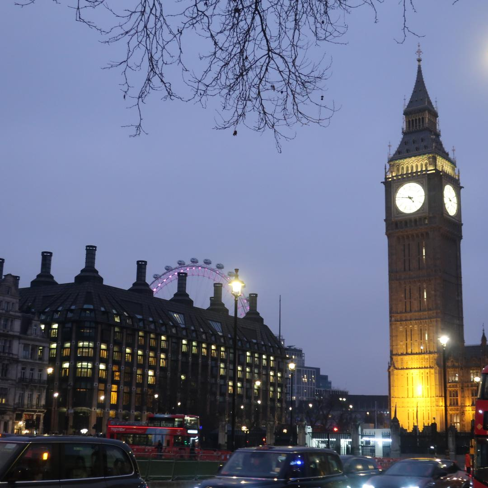
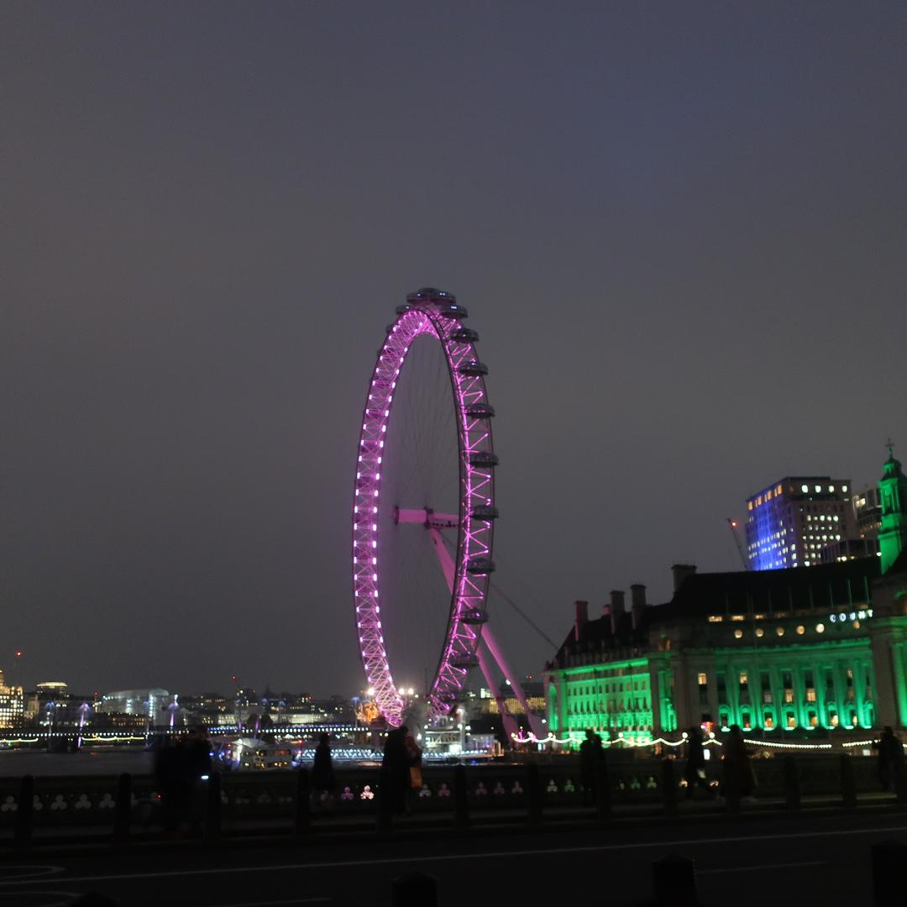
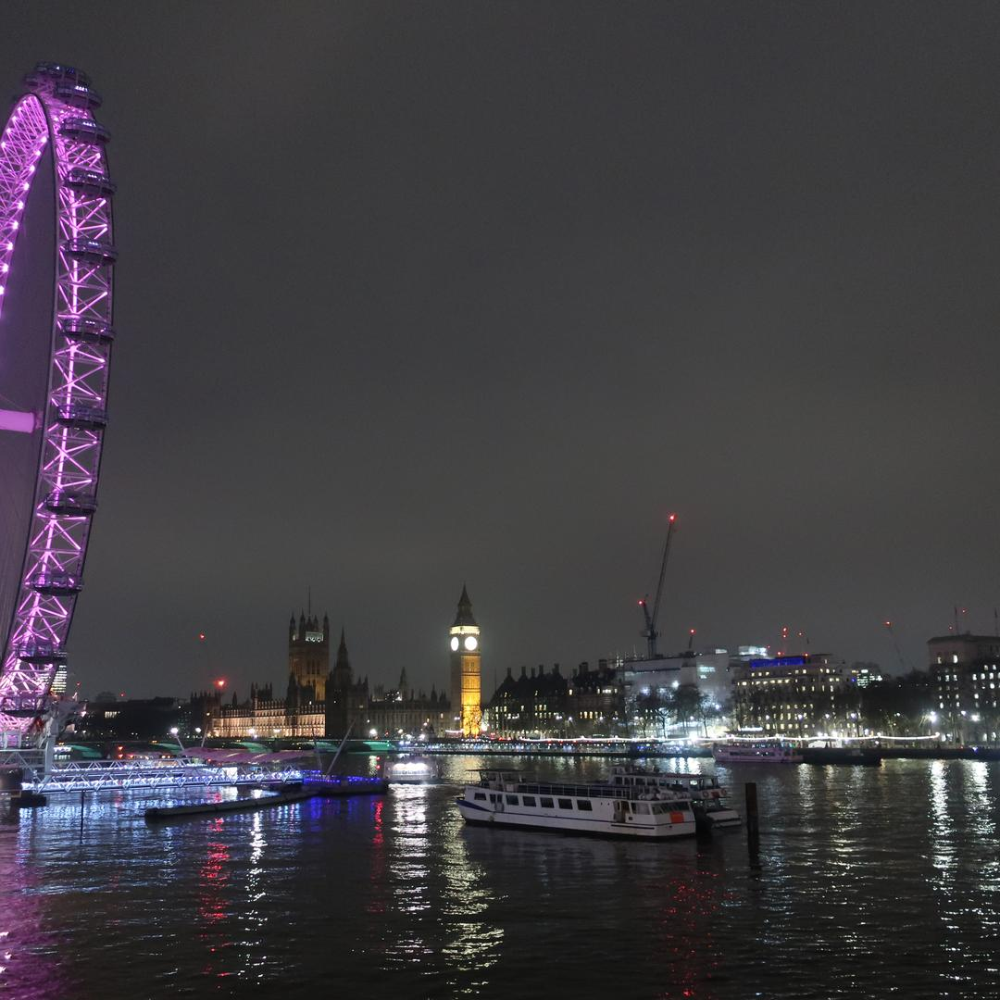
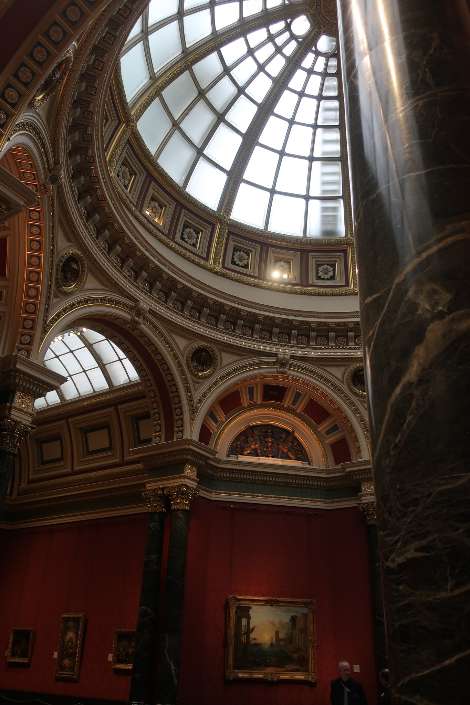
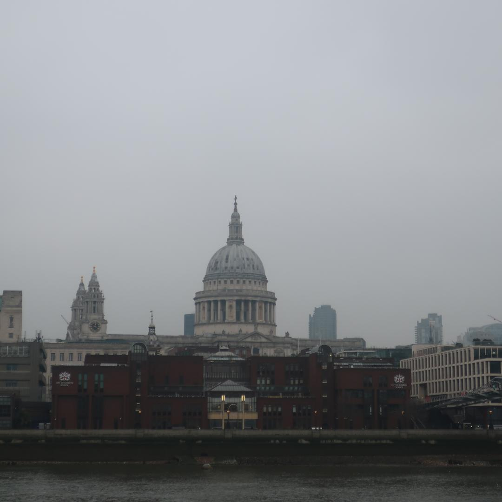
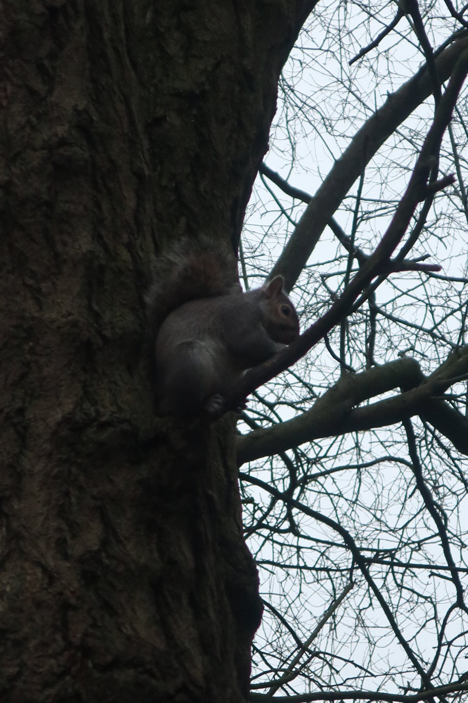
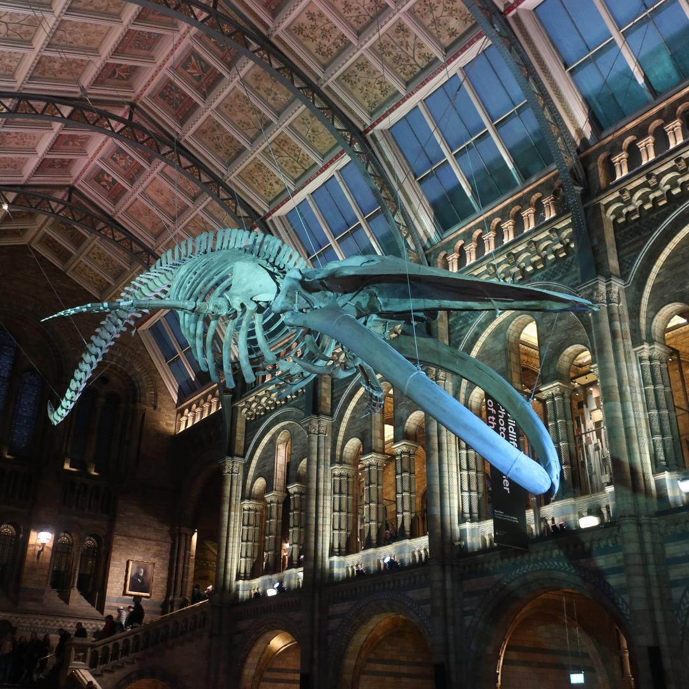
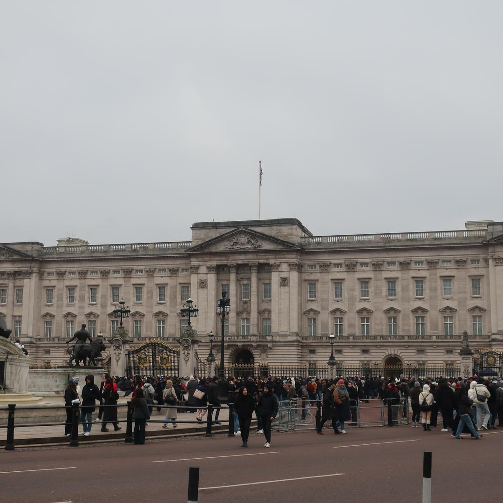
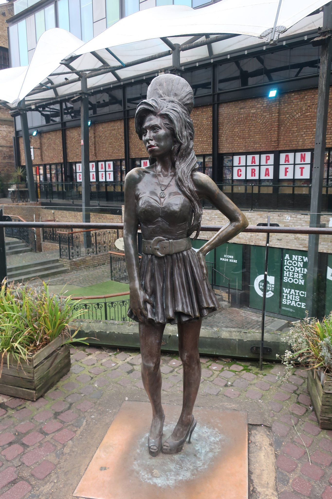

Two Days in London: January 2025

In January 2025, we enjoyed a fantastic two-day city break in London, revisiting its iconic highlights. Our itinerary included admiring the iconic Big Ben and Parliament, marveling at the London Eye, exploring the vibrant streets of Chinatown, Covent Garden, and Piccadilly Circus. We immersed ourselves in art and science at the National Gallery and the Natural History Museum, crossed the historic Tower Bridge, and wandered through Portobello Road, Camden, and Hyde Park, where we enjoyed feeding the friendly squirrels.
We also visited the stately Buckingham Palace, enjoyed the city's lively pub scene, and sampled delicious street food, making the most of this vibrant and dynamic city.









 Sri Lanka and Maldives
Sri Lanka and Maldives
 Bordeaux
Bordeaux
 Tallin & Riga Christmas Markets
Tallin & Riga Christmas Markets
 Barcelona, Vic & Girona
Barcelona, Vic & Girona